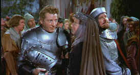
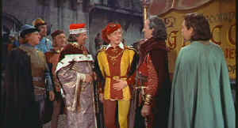

"The vessel with the pestle has the pellet with the poison and the
chalice with the palace has the brew that is true," is the mantra for survival that Danny Kaye bollixes up in one of the
screen’s funniest comedies, The Court Jester. The comic’s magic with word
patter and his very individual physical style are in evidence in this 1956 spoof on golden
era Hollywood swashbucklers. The Court Jester marks a departure from the usual Kaye
vehicle since more attention is paid to the plot line and most of the humor develops
through the interaction of the characters inhabiting this world. Many of Kaye’s
previous movies depend on the comic’s screen persona rather than using terrific
scripting to develop the comedy. The Court Jester reigns regally as the crown jewel
of Kaye’s film output.
 |
Griselda rehearses Hawkins.
©Paramount |
Mistaken identity is a
typical comic device and it's used superbly in The Court Jester. Kaye plays
Hawkins, a jolly good follower of The Fox, the Robin Hood of this piece. Kaye plays at
being The Fox in his opening scene and then winds up impersonating a visiting jester to
the court of the royal usurper King Roderick the First. The jester has been brought to
court by the devious Sir Ravenhurst, for aside from his comic skills he is also a renowned
assassin. Not only is Hawkins mistaken for the jester by Ravenhurst and crew, he is also
later taken for The Fox, and to complicate matters even further, the King's daughter
Gwendolyn falls in love with him. Hawkins in the mean time is in love with the maid Jean,
an most able agent of The Fox. Add the evil eye of Griselda to the brew and its madcap
comedy at its most hilarious.
 |
King of jesters and jester to the King©Paramount |
There are several marvelous musical
production numbers, including "Outfox the Fox" and "The Maladjusted
Jester." Wait till you see Kaye surrounded by a chorus line of armored knights. That
alone makes The Court Jester worth watching.
Kaye is so great in The Court Jester. He was born for
this role and the role for him. His energy is divine, his innocence sublime and his
singing knightly. Kaye gets great support from Basil Rathbone spoofing his own Robin Hood
role, Angela Landsbury as the princess Gwendolyn and Cecil Parker as King Roderick. Glynis
Johns is sweet and pretty as the maid Jean. Mildred Natwick almost steals the show as the
charming Griselda. Did I say charming?
The color on The Court Jester is absolutely invigorating.
What a great high. All the richly adorned costumes of the king's court come to life on
this DVD. The high energy of the production is enhanced by the visual beauty of this
wonderful film. Though high color saturation can lead to color bleeding, The Court
Jester maintains it's color integrity throughout. The picture is quite sharp. There is
slight edge enhancement, but it's not disturbing. God bless Paramount for taking the
trouble to make this grand entertainment an anamorphic transfer. I'm plain greedy. I want The
Court Jester to look as good as it can since it's one of my all time favorite movies,
and this is probably as good as it will ever look. There are several scenes in which there
was stationary dirt on the Rank which shows up prominently against the blue skies. Too
bad. The sound is just fine. It's clean, the glorious lyrics and clever dialogue are easy
to understand. Could you ask for anything more?
|